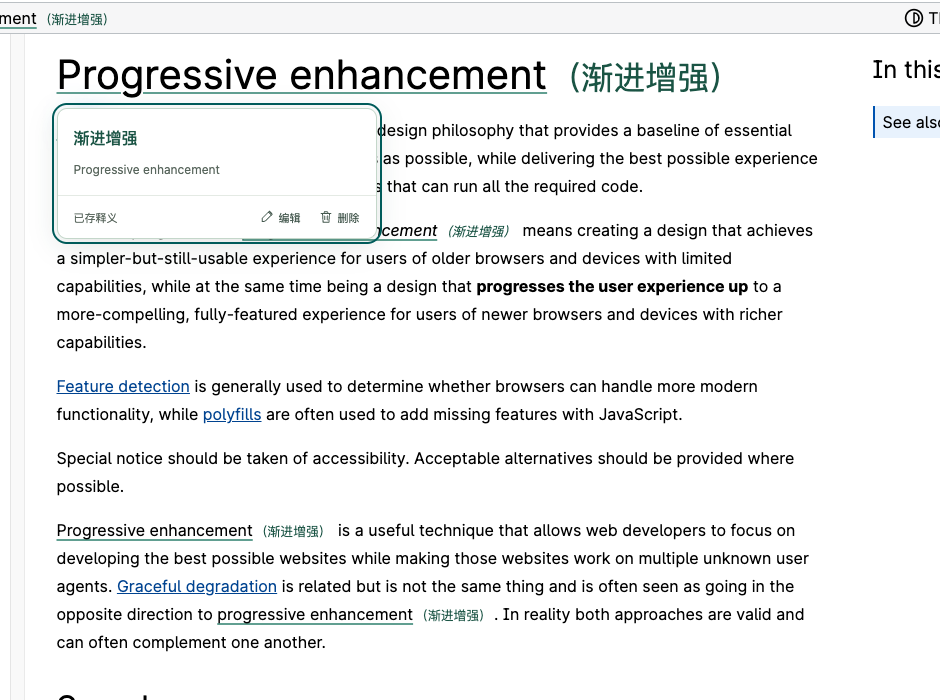

模型和用量，自己选
自带模型和 Key，选择默认模型，也能保存多个备用连接。按所选服务的实际用量规则付费，需要时再调用。
用自己的模型 Key，按服务商的用量规则付费。查过的词句留在本地，下次阅读时，释义会在原文里再次出现。
开始使用点译自带模型 Key · 本地词句库 · Chrome / Edge

我经常在外语网页里查词，也常在下一篇文章里遇到同一个词。我想自己选择模型，让费用跟着实际用量走，也让查过的词句在阅读中主动提醒我。
需要时，选择适合这次阅读的模型发起翻译；翻译成功后，把短词句留在本地，让认真查过的内容不只停留在一次查询里。
于是有了点译。需要时翻译，查过就留下。换一篇文章再遇到，正文里有一条熟悉的下划线，也有之前存下的释义。
少一点重复查询，把注意力留给正在读的内容。
自带模型和 Key，选择默认模型，也能保存多个备用连接。按所选服务的实际用量规则付费，需要时再调用。
短词句翻译成功后保存到本地。相同目标语言下再次遇见，直接提示已存释义，复用不再请求模型。
细下划线标出熟悉的词句。悬浮查看释义，也可以选择括号显示；想修改或删除，随时都能处理。
需要连贯阅读时，切换双语或仅译文。网页自动留下摘要与轨迹，打开侧栏读重点，再用日周月年回顾串起收获。
不是多记一份清单，而是在真正用到的时候，再看见一次。
连接一次模型，把之后遇见的词，慢慢留给自己。
选 DeepSeek、通义千问或 OpenAI，填入自己的 Key。其他服务也可以自定义连接。
点击语言胶囊开始翻译。短词句成功后自动保存，只选中或复制不会发起请求。
已存词句会在正文中自动标记。悬浮就能回看，继续读下去，不必从头再查一次。
在 MDN 阅读 Progressive enhancement 时，选中短语并实际翻译，得到「渐进增强」。打开另一篇讲 Graceful degradation 的文章，同一个短语已经带着释义出现。
下面两张图来自实际安装的插件。第二页没有再次点击翻译，展示的是本地词句库的自动提示。
原文作者 Mozilla Contributors，文档内容采用 CC BY SA 2.5。画面经裁切并叠加点译实际释义；素材来源。截图用于演示，不代表关联或背书。
把费用、提醒和数据的位置，说清楚。
模型费用由你选择的服务商按对应型号、用量及账户规则结算。点译使用你自己的 Key 直连服务，不提供内置套餐、共享密钥或代扣流程。不同模型的价格与免费额度以服务商为准。
API 连接需要你自己的 Key。常见厂家已配好地址与推荐型号，输入框旁提供官方获取入口；兼容服务和无鉴权本地模型也可连接。也可以安装本机助手，复用已登录的 Codex，按该账户规则使用额度。
再次阅读普通网页时，点译会匹配当前目标语言下的本地词句库，在命中的词句下画细线。悬浮可查看已存释义，也可切换为括号显示。提醒发生在实际阅读中，不需要逐站开启。
自动标记与查看已存释义直接读取本地词库，不再请求模型。新翻译、连接测试、开启自动总结后的后台网页总结和周期回顾会调用所选服务；主动重新翻译或总结也会产生新用量。自动总结默认关闭，可在弹窗顶部开启，手动总结不受影响。已有摘要和相同输入尽量复用，黑名单网站不处理。
词句库和页面译文保存在此浏览器。模型与 Key 在模型库保存一次，各场景直接选择；新增模型默认勾选本地长期保存，也可取消改为本次会话。阅读轨迹、摘要和回顾也长期保存在本地。没有点译账号或云端副本；卸载扩展前请先导出词库与知识。
自动显示的是“已存释义”，不会每次重新判断语境。发现义项不合适时，可以在词句库编辑或删除。这个版本暂不自动区分一个词的多个义项。
可以。在模型库添加一次连接，各场景独立选择默认及备用；选同一个连接时直接复用 Key。短词与整页阅读可选轻量翻译型号；网页总结使用支持流式输出的通用对话模型，在独立侧栏展示结果；独立总结模型也负责后台网页归纳和周期回顾。
可以。模型库统一保存多个连接；翻译和总结各自指定默认连接，其余按勾选和顺序备用。同厂家不同 Key 各自保存。网络、鉴权、额度或服务故障时依次尝试，每个连接最多一次；总结已经输出文字后不自动切换重跑。备用服务也可能收到相同资料并产生相应模型用量。
两者不同。API Key 连接按所选服务商的用量规则结算；本机 Codex 沿用已有账户的权限与额度，ChatGPT 登录可能受套餐额度限制，不等同于普通 API 计费。浏览器不复制登录令牌；macOS / Linux 首次需要安装随包提供的本机助手。查看连接指引。
当前提供 Chrome / Edge 桌面版的本地安装包，尚未上架浏览器商店。首次安装解压后加载；已有旧版先运行包内“升级点译”保留原目录与原数据，再在扩展管理页重新加载原插件，不要先卸载。普通网页默认开启，可按网站加入黑名单；浏览器内部页、商店、内置 PDF、图片文字以及框架内部分内容暂不支持。
manifest.json 的文件夹，连接自己的模型。已有用户保留原安装目录，覆盖新版后重新加载即可。